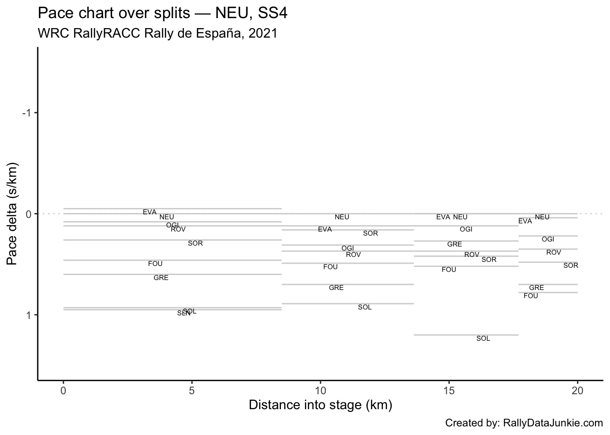

4 SS4 Results
| Pos | Car | Code | Time (s) | Gap | Diff |
|---|---|---|---|---|---|
| 1 | 11 | NEU | 617.6 | 0.0 | 0.0 |
| 2 | 33 | EVA | 617.9 | 0.3 | 0.3 |
| 3 | 1 | OGI | 620.9 | 3.3 | 3.0 |
| 4 | 69 | ROV | 622.8 | 5.2 | 1.9 |
| 5 | 6 | SOR | 623.4 | 5.8 | 0.6 |
| 6 | 16 | FOU | 627.9 | 10.3 | 4.5 |
| 7 | 44 | GRE | 629.0 | 11.4 | 1.1 |
| 8 | 2 | SOL | 638.5 | 20.9 | 9.5 |
| 9 | 14 | SLN | 644.4 | 26.8 | 5.9 |
4.1 Stage SS4 Splits Analysis
Reports on splits
4.1.1 Split Locations
Length of each split section in km:
| full_split_distances | stage_dist | |
|---|---|---|
| split_1 | 8.49 | 8.49 |
| split_2 | 5.14 | 13.63 |
| split_3 | 4.07 | 17.70 |
| split_N | 2.30 | 20.00 |
4.1.2 Stage Split Times & Result
Summary of stage split times and overall stage result:
| code | split_1 | split_2 | split_3 | split_N | diffFirstS | position |
|---|---|---|---|---|---|---|
| NEU | 237.5 | 383.5 | 547.0 | 617.6 | 0.0 | 1 |
| EVA | 237.1 | 383.7 | 547.2 | 617.9 | 0.3 | 2 |
| OGI | 238.2 | 385.8 | 549.8 | 620.9 | 3.3 | 3 |
| ROV | 238.5 | 386.4 | 551.4 | 622.8 | 5.2 | 4 |
| SOR | 239.7 | 386.5 | 551.7 | 623.4 | 5.8 | 5 |
| FOU | 241.4 | 389.9 | 555.5 | 627.9 | 10.3 | 6 |
| GRE | 242.6 | 392.2 | 556.8 | 629.0 | 11.4 | 7 |
| SOL | 245.4 | 396.0 | 564.4 | 638.5 | 20.9 | 8 |
| SLN | 245.6 | 399.5 | 570.2 | 644.4 | 26.8 | 9 |
4.1.3 Split Time Rankings
Rank of each split time:
| code | split_1 | split_2 | split_3 | split_N |
|---|---|---|---|---|
| NEU | 2 | 1 | 1 | 1 |
| EVA | 1 | 2 | 2 | 2 |
| OGI | 3 | 3 | 3 | 3 |
| ROV | 4 | 4 | 4 | 4 |
| SOR | 5 | 5 | 5 | 5 |
| FOU | 6 | 6 | 6 | 6 |
| GRE | 7 | 7 | 7 | 7 |
| SOL | 8 | 8 | 8 | 8 |
| SLN | 9 | 9 | 9 | 9 |
Rank on each split section:
| code | split_1 | split_2 | split_3 | split_N |
|---|---|---|---|---|
| NEU | 2 | 1 | 1 | 1 |
| EVA | 1 | 2 | 2 | 2 |
| OGI | 3 | 4 | 3 | 3 |
| ROV | 4 | 5 | 5 | 4 |
| SOR | 5 | 3 | 6 | 5 |
| FOU | 6 | 6 | 7 | 7 |
| GRE | 7 | 7 | 4 | 6 |
| SOL | 8 | 8 | 8 | 8 |
| SLN | 9 | 9 | 9 | 9 |
4.1.4 Split Section Pace
Pace is measured in seconds per kilometer, which is to say, how long it takes to complete each kilometer (lower is better):
| code | split_1 | split_2 | split_3 | split_N |
|---|---|---|---|---|
| NEU | 27.97 | 28.40 | 40.17 | 30.70 |
| EVA | 27.93 | 28.52 | 40.17 | 30.74 |
| OGI | 28.06 | 28.72 | 40.29 | 30.91 |
| ROV | 28.09 | 28.77 | 40.54 | 31.04 |
| SOR | 28.23 | 28.56 | 40.59 | 31.17 |
| FOU | 28.43 | 28.89 | 40.69 | 31.48 |
| GRE | 28.57 | 29.11 | 40.44 | 31.39 |
| SOL | 28.90 | 29.30 | 41.38 | 32.22 |
| SLN | 28.93 | 29.94 | 41.94 | 32.26 |
4.1.5 Pace Chart
Pace relative to the stage winner.
4.1.6 Ultimate Stage Comparisons
Split time comparisons relative to various ultimate stage time calculations.
These views provide various ways of comparing the performance of each driver to various ghost drivers:
- best recorded split time at each split (ultimate actuals): gives an estimate of how well the driver’s split times compare with each first ranked split time (time into stage at each split);
- fastest time going from one split to the next (ultimate sections): gives an estimate of how quickly each driver completed each split section relative to the quickest time recorded completing that split section (time taken to go from one split point to the next);
- accumulated ultimate sections times: gives and estimate of how quickly the driver is going relative to the fastest possible completion of the stage based on accumulated ultimate split section times.
4.1.6.1 Ultimate Actuals
Driver times compared to the first ranked recorded split time at each split:
| code | split_1 | split_2 | split_3 | split_N |
|---|---|---|---|---|
| NEU | 0.4 | 0.0 | 0.0 | 0.0 |
| EVA | 0.0 | 0.2 | 0.2 | 0.3 |
| OGI | 1.1 | 2.3 | 2.8 | 3.3 |
| ROV | 1.4 | 2.9 | 4.4 | 5.2 |
| SOR | 2.6 | 3.0 | 4.7 | 5.8 |
| FOU | 4.3 | 6.4 | 8.5 | 10.3 |
| GRE | 5.5 | 8.7 | 9.8 | 11.4 |
| SOL | 8.3 | 12.5 | 17.4 | 20.9 |
| SLN | 8.5 | 16.0 | 23.2 | 26.8 |
| ultimate | 0.0 | 0.0 | 0.0 | 0.0 |
4.1.6.2 Ultimate Sections
Split durations rebased relative to the fastest transit of each split section:
| code | split_1 | split_2 | split_3 | split_N |
|---|---|---|---|---|
| NEU | 0.4 | 0.0 | 0.0 | 0.0 |
| EVA | 0.0 | 0.6 | 0.0 | 0.1 |
| OGI | 1.1 | 1.6 | 0.5 | 0.5 |
| ROV | 1.4 | 1.9 | 1.5 | 0.8 |
| SOR | 2.6 | 0.8 | 1.7 | 1.1 |
| FOU | 4.3 | 2.5 | 2.1 | 1.8 |
| GRE | 5.5 | 3.6 | 1.1 | 1.6 |
| SOL | 8.3 | 4.6 | 4.9 | 3.5 |
| SLN | 8.5 | 7.9 | 7.2 | 3.6 |
| ultimate | 0.0 | 0.0 | 0.0 | 0.0 |
4.1.6.3 Ultimate Accumulated Sections
Actual split times relative to the accumulated ultimate split section times:
| code | split_1 | split_2 | split_3 | split_N |
|---|---|---|---|---|
| NEU | 0.4 | 0.4 | 0.4 | 0.4 |
| EVA | 0.0 | 0.6 | 0.6 | 0.7 |
| OGI | 1.1 | 2.7 | 3.2 | 3.7 |
| ROV | 1.4 | 3.3 | 4.8 | 5.6 |
| SOR | 2.6 | 3.4 | 5.1 | 6.2 |
| FOU | 4.3 | 6.8 | 8.9 | 10.7 |
| GRE | 5.5 | 9.1 | 10.2 | 11.8 |
| SOL | 8.3 | 12.9 | 17.8 | 21.3 |
| SLN | 8.5 | 16.4 | 23.6 | 27.2 |
| ultimate | 0.0 | 0.0 | 0.0 | 0.0 |
4.1.7 Split Section Pace Distribution
Distribution of pace values for each split section:
4.2 Text report
| code | identifier | entryId | stage | overall_pos | prev_position | retained_lead | lost_lead | gained_lead | overall_position_delta | overall_chase_code | overall_lead_code | overall_gap | overall_diff | overall_chase | overall_stage_pos | stage_position | stage_win | position | TimeInS | gap | diff | chase | chase_code | lead_code |
|---|---|---|---|---|---|---|---|---|---|---|---|---|---|---|---|---|---|---|---|---|---|---|---|---|
| NEU | 11 | 24007 | SS4 | 2 | 2 | FALSE | FALSE | FALSE | 0 | OGI | EVA | 7.6 | 7.6 | 8.0 | 1 | 1 | TRUE | 1 | 617.6 | 0.0 | 0.0 | 0.3 | EVA | NA |
| EVA | 33 | 24006 | SS4 | 1 | 1 | TRUE | FALSE | FALSE | 0 | NEU | NA | 0.0 | NA | 7.6 | 2 | 2 | FALSE | 2 | 617.9 | 0.3 | 0.3 | 3.0 | OGI | NEU |
| OGI | 1 | 24005 | SS4 | 3 | 3 | FALSE | FALSE | FALSE | 0 | SOR | NEU | 15.6 | 8.0 | 6.6 | 3 | 3 | FALSE | 3 | 620.9 | 3.3 | 3.0 | 1.9 | ROV | EVA |
| ROV | 69 | 24008 | SS4 | 5 | 5 | FALSE | FALSE | FALSE | 0 | FOU | SOR | 30.0 | 7.8 | 28.3 | 4 | 4 | FALSE | 4 | 622.8 | 5.2 | 1.9 | 0.6 | SOR | OGI |
| SOR | 6 | 24012 | SS4 | 4 | 4 | FALSE | FALSE | FALSE | 0 | ROV | OGI | 22.2 | 6.6 | 7.8 | 5 | 5 | FALSE | 5 | 623.4 | 5.8 | 0.6 | 4.5 | FOU | ROV |
| FOU | 16 | 24013 | SS4 | 6 | 7 | FALSE | FALSE | FALSE | 1 | GRE | ROV | 58.3 | 28.3 | 12.7 | 6 | 6 | FALSE | 6 | 627.9 | 10.3 | 4.5 | 1.1 | GRE | SOR |
| GRE | 44 | 24011 | SS4 | 7 | 8 | FALSE | FALSE | FALSE | 1 | SOL | FOU | 71.0 | 12.7 | 21.6 | 7 | 7 | FALSE | 7 | 629.0 | 11.4 | 1.1 | 9.5 | SOL | FOU |
| SOL | 2 | 24015 | SS4 | 8 | 9 | FALSE | FALSE | FALSE | 1 | SLN | GRE | 92.6 | 21.6 | 24.1 | 8 | 8 | FALSE | 8 | 638.5 | 20.9 | 9.5 | 5.9 | SLN | GRE |
| SLN | 14 | 24014 | SS4 | 9 | 10 | FALSE | FALSE | FALSE | 1 | TÄN | SOL | 116.7 | 24.1 | NA | 9 | 9 | FALSE | 9 | 644.4 | 26.8 | 5.9 | NA | TÄN | SOL |
| TÄN | 8 | 24009 | SS4 | NA | 6 | FALSE | FALSE | FALSE | NA | NA | SLN | NA | NA | NA | NA | 10 | FALSE | 10 | NA | NA | NA | NA | NA | SLN |
Stage report for SS4:
NEU recorded the stage win and in a time of 617.6s.
EVA took second on stage, with a time of 617.9s and retained the overall lead, just 0.3s off NEU.
OGI took third on stage, 3.3s behind stage winner NEU in a time of 620.9s .
ROV was in fourth on stage, 1.9s further back behind OGI .
SOR took fifth on stage, 5.8s behind stage winner NEU, just 0.6s off ROV.
FOU took sixth on stage, 4.5s behind SOR and moved up one place to sixth overall.
GRE took seventh position on stage, 11.4s behind the stage winner in a time of 629.0s and moved up one place to seventh overall.
SOL was in eighth place on stage, with a time of 638.5s and moved up one place to eighth overall.
SLN was in ninth on stage, with a time of 644.4s and moved up one place to ninth overall.
4.3 Driver Report, SS4 - OGI
OGI took third on stage, 3.3s behind stage winner NEU in a time of 620.9s .
Stage report for OGI.
| Pos | Car | Code | Time (s) | Gap | Diff |
|---|---|---|---|---|---|
| 1 | 11 | NEU | -3.3 | -3.3 | 0.0 |
| 2 | 33 | EVA | -3.0 | -3.0 | 0.3 |
| 3 | 1 | OGI | 0.0 | 0.0 | 3.0 |
| 4 | 69 | ROV | 1.9 | 1.9 | 1.9 |
| 5 | 6 | SOR | 2.5 | 2.5 | 0.6 |
| 6 | 16 | FOU | 7.0 | 7.0 | 4.5 |
| 7 | 44 | GRE | 8.1 | 8.1 | 1.1 |
| 8 | 2 | SOL | 17.6 | 17.6 | 9.5 |
| 9 | 14 | SLN | 23.5 | 23.5 | 5.9 |
4.3.1 Rebased Split Times
OGI’s delta at each split compared to other drivers.
| code | split_1 | split_2 | split_3 | split_N |
|---|---|---|---|---|
| NEU | -0.7 | -2.3 | -2.8 | -3.3 |
| EVA | -1.1 | -2.1 | -2.6 | -3.0 |
| OGI | 0.0 | 0.0 | 0.0 | 0.0 |
| ROV | 0.3 | 0.6 | 1.6 | 1.9 |
| SOR | 1.5 | 0.7 | 1.9 | 2.5 |
| FOU | 3.2 | 4.1 | 5.7 | 7.0 |
| GRE | 4.4 | 6.4 | 7.0 | 8.1 |
| SOL | 7.2 | 10.2 | 14.6 | 17.6 |
| SLN | 7.4 | 13.7 | 20.4 | 23.5 |
4.3.2 Off-the-Pace Chart
Accumulated stage time deltas at each split:
4.3.3 Within-Split Duration Deltas
OGI’s delta in time to complete each split section compared to other drivers:
| code | split_1 | split_2 | split_3 | split_N |
|---|---|---|---|---|
| NEU | -0.7 | -1.6 | -0.5 | -0.5 |
| EVA | -1.1 | -1.0 | -0.5 | -0.4 |
| OGI | 0.0 | 0.0 | 0.0 | 0.0 |
| ROV | 0.3 | 0.3 | 1.0 | 0.3 |
| SOR | 1.5 | -0.8 | 1.2 | 0.6 |
| FOU | 3.2 | 0.9 | 1.6 | 1.3 |
| GRE | 4.4 | 2.0 | 0.6 | 1.1 |
| SOL | 7.2 | 3.0 | 4.4 | 3.0 |
| SLN | 7.4 | 6.3 | 6.7 | 3.1 |
4.3.4 Within-Split Pace Deltas
| code | split_1 | split_2 | split_3 | split_N |
|---|---|---|---|---|
| NEU | -0.08 | -0.31 | -0.12 | -0.22 |
| EVA | -0.13 | -0.19 | -0.12 | -0.17 |
| OGI | 0.00 | 0.00 | 0.00 | 0.00 |
| ROV | 0.04 | 0.06 | 0.25 | 0.13 |
| SOR | 0.18 | -0.16 | 0.29 | 0.26 |
| FOU | 0.38 | 0.18 | 0.39 | 0.57 |
| GRE | 0.52 | 0.39 | 0.15 | 0.48 |
| SOL | 0.85 | 0.58 | 1.08 | 1.30 |
| SLN | 0.87 | 1.23 | 1.65 | 1.35 |
4.3.5 Within-Split Pace Map
4.4 Driver Report, SS4 - EVA
EVA took second on stage, with a time of 617.9s and retained the overall lead, just 0.3s off NEU.
Stage report for EVA.
| Pos | Car | Code | Time (s) | Gap | Diff |
|---|---|---|---|---|---|
| 1 | 11 | NEU | -0.3 | -0.3 | 0.0 |
| 2 | 33 | EVA | 0.0 | 0.0 | 0.3 |
| 3 | 1 | OGI | 3.0 | 3.0 | 3.0 |
| 4 | 69 | ROV | 4.9 | 4.9 | 1.9 |
| 5 | 6 | SOR | 5.5 | 5.5 | 0.6 |
| 6 | 16 | FOU | 10.0 | 10.0 | 4.5 |
| 7 | 44 | GRE | 11.1 | 11.1 | 1.1 |
| 8 | 2 | SOL | 20.6 | 20.6 | 9.5 |
| 9 | 14 | SLN | 26.5 | 26.5 | 5.9 |
4.4.1 Rebased Split Times
EVA’s delta at each split compared to other drivers.
| code | split_1 | split_2 | split_3 | split_N |
|---|---|---|---|---|
| NEU | 0.4 | -0.2 | -0.2 | -0.3 |
| EVA | 0.0 | 0.0 | 0.0 | 0.0 |
| OGI | 1.1 | 2.1 | 2.6 | 3.0 |
| ROV | 1.4 | 2.7 | 4.2 | 4.9 |
| SOR | 2.6 | 2.8 | 4.5 | 5.5 |
| FOU | 4.3 | 6.2 | 8.3 | 10.0 |
| GRE | 5.5 | 8.5 | 9.6 | 11.1 |
| SOL | 8.3 | 12.3 | 17.2 | 20.6 |
| SLN | 8.5 | 15.8 | 23.0 | 26.5 |
4.4.2 Off-the-Pace Chart
Accumulated stage time deltas at each split:
4.4.3 Within-Split Duration Deltas
EVA’s delta in time to complete each split section compared to other drivers:
| code | split_1 | split_2 | split_3 | split_N |
|---|---|---|---|---|
| NEU | 0.4 | -0.6 | 0.0 | -0.1 |
| EVA | 0.0 | 0.0 | 0.0 | 0.0 |
| OGI | 1.1 | 1.0 | 0.5 | 0.4 |
| ROV | 1.4 | 1.3 | 1.5 | 0.7 |
| SOR | 2.6 | 0.2 | 1.7 | 1.0 |
| FOU | 4.3 | 1.9 | 2.1 | 1.7 |
| GRE | 5.5 | 3.0 | 1.1 | 1.5 |
| SOL | 8.3 | 4.0 | 4.9 | 3.4 |
| SLN | 8.5 | 7.3 | 7.2 | 3.5 |
4.4.4 Within-Split Pace Deltas
| code | split_1 | split_2 | split_3 | split_N |
|---|---|---|---|---|
| NEU | 0.05 | -0.12 | 0.00 | -0.04 |
| EVA | 0.00 | 0.00 | 0.00 | 0.00 |
| OGI | 0.13 | 0.19 | 0.12 | 0.17 |
| ROV | 0.16 | 0.25 | 0.37 | 0.30 |
| SOR | 0.31 | 0.04 | 0.42 | 0.43 |
| FOU | 0.51 | 0.37 | 0.52 | 0.74 |
| GRE | 0.65 | 0.58 | 0.27 | 0.65 |
| SOL | 0.98 | 0.78 | 1.20 | 1.48 |
| SLN | 1.00 | 1.42 | 1.77 | 1.52 |
4.4.5 Within-Split Pace Map
4.5 Driver Report, SS4 - NEU
NEU recorded the stage win and in a time of 617.6s.
Stage report for NEU.
| Pos | Car | Code | Time (s) | Gap | Diff |
|---|---|---|---|---|---|
| 1 | 11 | NEU | 0.0 | 0.0 | 0.0 |
| 2 | 33 | EVA | 0.3 | 0.3 | 0.3 |
| 3 | 1 | OGI | 3.3 | 3.3 | 3.0 |
| 4 | 69 | ROV | 5.2 | 5.2 | 1.9 |
| 5 | 6 | SOR | 5.8 | 5.8 | 0.6 |
| 6 | 16 | FOU | 10.3 | 10.3 | 4.5 |
| 7 | 44 | GRE | 11.4 | 11.4 | 1.1 |
| 8 | 2 | SOL | 20.9 | 20.9 | 9.5 |
| 9 | 14 | SLN | 26.8 | 26.8 | 5.9 |
4.5.1 Rebased Split Times
NEU’s delta at each split compared to other drivers.
| code | split_1 | split_2 | split_3 | split_N |
|---|---|---|---|---|
| NEU | 0.0 | 0.0 | 0.0 | 0.0 |
| EVA | -0.4 | 0.2 | 0.2 | 0.3 |
| OGI | 0.7 | 2.3 | 2.8 | 3.3 |
| ROV | 1.0 | 2.9 | 4.4 | 5.2 |
| SOR | 2.2 | 3.0 | 4.7 | 5.8 |
| FOU | 3.9 | 6.4 | 8.5 | 10.3 |
| GRE | 5.1 | 8.7 | 9.8 | 11.4 |
| SOL | 7.9 | 12.5 | 17.4 | 20.9 |
| SLN | 8.1 | 16.0 | 23.2 | 26.8 |
4.5.2 Off-the-Pace Chart
Accumulated stage time deltas at each split:
4.5.3 Within-Split Duration Deltas
NEU’s delta in time to complete each split section compared to other drivers:
| code | split_1 | split_2 | split_3 | split_N |
|---|---|---|---|---|
| NEU | 0.0 | 0.0 | 0.0 | 0.0 |
| EVA | -0.4 | 0.6 | 0.0 | 0.1 |
| OGI | 0.7 | 1.6 | 0.5 | 0.5 |
| ROV | 1.0 | 1.9 | 1.5 | 0.8 |
| SOR | 2.2 | 0.8 | 1.7 | 1.1 |
| FOU | 3.9 | 2.5 | 2.1 | 1.8 |
| GRE | 5.1 | 3.6 | 1.1 | 1.6 |
| SOL | 7.9 | 4.6 | 4.9 | 3.5 |
| SLN | 8.1 | 7.9 | 7.2 | 3.6 |
4.5.4 Within-Split Pace Deltas
| code | split_1 | split_2 | split_3 | split_N |
|---|---|---|---|---|
| NEU | 0.00 | 0.00 | 0.00 | 0.00 |
| EVA | -0.05 | 0.12 | 0.00 | 0.04 |
| OGI | 0.08 | 0.31 | 0.12 | 0.22 |
| ROV | 0.12 | 0.37 | 0.37 | 0.35 |
| SOR | 0.26 | 0.16 | 0.42 | 0.48 |
| FOU | 0.46 | 0.49 | 0.52 | 0.78 |
| GRE | 0.60 | 0.70 | 0.27 | 0.70 |
| SOL | 0.93 | 0.89 | 1.20 | 1.52 |
| SLN | 0.95 | 1.54 | 1.77 | 1.57 |
4.5.5 Within-Split Pace Map

4.6 Driver Report, SS4 - ROV
ROV was in fourth on stage, 1.9s further back behind OGI .
Stage report for ROV.
| Pos | Car | Code | Time (s) | Gap | Diff |
|---|---|---|---|---|---|
| 1 | 11 | NEU | -5.2 | -5.2 | 0.0 |
| 2 | 33 | EVA | -4.9 | -4.9 | 0.3 |
| 3 | 1 | OGI | -1.9 | -1.9 | 3.0 |
| 4 | 69 | ROV | 0.0 | 0.0 | 1.9 |
| 5 | 6 | SOR | 0.6 | 0.6 | 0.6 |
| 6 | 16 | FOU | 5.1 | 5.1 | 4.5 |
| 7 | 44 | GRE | 6.2 | 6.2 | 1.1 |
| 8 | 2 | SOL | 15.7 | 15.7 | 9.5 |
| 9 | 14 | SLN | 21.6 | 21.6 | 5.9 |
4.6.1 Rebased Split Times
ROV’s delta at each split compared to other drivers.
| code | split_1 | split_2 | split_3 | split_N |
|---|---|---|---|---|
| NEU | -1.0 | -2.9 | -4.4 | -5.2 |
| EVA | -1.4 | -2.7 | -4.2 | -4.9 |
| OGI | -0.3 | -0.6 | -1.6 | -1.9 |
| ROV | 0.0 | 0.0 | 0.0 | 0.0 |
| SOR | 1.2 | 0.1 | 0.3 | 0.6 |
| FOU | 2.9 | 3.5 | 4.1 | 5.1 |
| GRE | 4.1 | 5.8 | 5.4 | 6.2 |
| SOL | 6.9 | 9.6 | 13.0 | 15.7 |
| SLN | 7.1 | 13.1 | 18.8 | 21.6 |
4.6.2 Off-the-Pace Chart
Accumulated stage time deltas at each split:
4.6.3 Within-Split Duration Deltas
ROV’s delta in time to complete each split section compared to other drivers:
| code | split_1 | split_2 | split_3 | split_N |
|---|---|---|---|---|
| NEU | -1.0 | -1.9 | -1.5 | -0.8 |
| EVA | -1.4 | -1.3 | -1.5 | -0.7 |
| OGI | -0.3 | -0.3 | -1.0 | -0.3 |
| ROV | 0.0 | 0.0 | 0.0 | 0.0 |
| SOR | 1.2 | -1.1 | 0.2 | 0.3 |
| FOU | 2.9 | 0.6 | 0.6 | 1.0 |
| GRE | 4.1 | 1.7 | -0.4 | 0.8 |
| SOL | 6.9 | 2.7 | 3.4 | 2.7 |
| SLN | 7.1 | 6.0 | 5.7 | 2.8 |
4.6.4 Within-Split Pace Deltas
| code | split_1 | split_2 | split_3 | split_N |
|---|---|---|---|---|
| NEU | -0.12 | -0.37 | -0.37 | -0.35 |
| EVA | -0.16 | -0.25 | -0.37 | -0.30 |
| OGI | -0.04 | -0.06 | -0.25 | -0.13 |
| ROV | 0.00 | 0.00 | 0.00 | 0.00 |
| SOR | 0.14 | -0.21 | 0.05 | 0.13 |
| FOU | 0.34 | 0.12 | 0.15 | 0.43 |
| GRE | 0.48 | 0.33 | -0.10 | 0.35 |
| SOL | 0.81 | 0.53 | 0.84 | 1.17 |
| SLN | 0.84 | 1.17 | 1.40 | 1.22 |
4.6.5 Within-Split Pace Map
4.7 Driver Report, SS4 - TÄN
No stage report for TÄN.
4.8 Driver Report, SS4 - KAT
No stage report for KAT.
4.9 Driver Report, SS4 - GRE
GRE took seventh position on stage, 11.4s behind the stage winner in a time of 629.0s and moved up one place to seventh overall.
Stage report for GRE.
| Pos | Car | Code | Time (s) | Gap | Diff |
|---|---|---|---|---|---|
| 1 | 11 | NEU | -11.4 | -11.4 | 0.0 |
| 2 | 33 | EVA | -11.1 | -11.1 | 0.3 |
| 3 | 1 | OGI | -8.1 | -8.1 | 3.0 |
| 4 | 69 | ROV | -6.2 | -6.2 | 1.9 |
| 5 | 6 | SOR | -5.6 | -5.6 | 0.6 |
| 6 | 16 | FOU | -1.1 | -1.1 | 4.5 |
| 7 | 44 | GRE | 0.0 | 0.0 | 1.1 |
| 8 | 2 | SOL | 9.5 | 9.5 | 9.5 |
| 9 | 14 | SLN | 15.4 | 15.4 | 5.9 |
4.9.1 Rebased Split Times
GRE’s delta at each split compared to other drivers.
| code | split_1 | split_2 | split_3 | split_N |
|---|---|---|---|---|
| NEU | -5.1 | -8.7 | -9.8 | -11.4 |
| EVA | -5.5 | -8.5 | -9.6 | -11.1 |
| OGI | -4.4 | -6.4 | -7.0 | -8.1 |
| ROV | -4.1 | -5.8 | -5.4 | -6.2 |
| SOR | -2.9 | -5.7 | -5.1 | -5.6 |
| FOU | -1.2 | -2.3 | -1.3 | -1.1 |
| GRE | 0.0 | 0.0 | 0.0 | 0.0 |
| SOL | 2.8 | 3.8 | 7.6 | 9.5 |
| SLN | 3.0 | 7.3 | 13.4 | 15.4 |
4.9.2 Off-the-Pace Chart
Accumulated stage time deltas at each split:
4.9.3 Within-Split Duration Deltas
GRE’s delta in time to complete each split section compared to other drivers:
| code | split_1 | split_2 | split_3 | split_N |
|---|---|---|---|---|
| NEU | -5.1 | -3.6 | -1.1 | -1.6 |
| EVA | -5.5 | -3.0 | -1.1 | -1.5 |
| OGI | -4.4 | -2.0 | -0.6 | -1.1 |
| ROV | -4.1 | -1.7 | 0.4 | -0.8 |
| SOR | -2.9 | -2.8 | 0.6 | -0.5 |
| FOU | -1.2 | -1.1 | 1.0 | 0.2 |
| GRE | 0.0 | 0.0 | 0.0 | 0.0 |
| SOL | 2.8 | 1.0 | 3.8 | 1.9 |
| SLN | 3.0 | 4.3 | 6.1 | 2.0 |
4.9.4 Within-Split Pace Deltas
| code | split_1 | split_2 | split_3 | split_N |
|---|---|---|---|---|
| NEU | -0.60 | -0.70 | -0.27 | -0.70 |
| EVA | -0.65 | -0.58 | -0.27 | -0.65 |
| OGI | -0.52 | -0.39 | -0.15 | -0.48 |
| ROV | -0.48 | -0.33 | 0.10 | -0.35 |
| SOR | -0.34 | -0.54 | 0.15 | -0.22 |
| FOU | -0.14 | -0.21 | 0.25 | 0.09 |
| GRE | 0.00 | 0.00 | 0.00 | 0.00 |
| SOL | 0.33 | 0.19 | 0.93 | 0.83 |
| SLN | 0.35 | 0.84 | 1.50 | 0.87 |
4.9.5 Within-Split Pace Map
4.10 Driver Report, SS4 - SOR
SOR took fifth on stage, 5.8s behind stage winner NEU, just 0.6s off ROV.
Stage report for SOR.
| Pos | Car | Code | Time (s) | Gap | Diff |
|---|---|---|---|---|---|
| 1 | 11 | NEU | -5.8 | -5.8 | 0.0 |
| 2 | 33 | EVA | -5.5 | -5.5 | 0.3 |
| 3 | 1 | OGI | -2.5 | -2.5 | 3.0 |
| 4 | 69 | ROV | -0.6 | -0.6 | 1.9 |
| 5 | 6 | SOR | 0.0 | 0.0 | 0.6 |
| 6 | 16 | FOU | 4.5 | 4.5 | 4.5 |
| 7 | 44 | GRE | 5.6 | 5.6 | 1.1 |
| 8 | 2 | SOL | 15.1 | 15.1 | 9.5 |
| 9 | 14 | SLN | 21.0 | 21.0 | 5.9 |
4.10.1 Rebased Split Times
SOR’s delta at each split compared to other drivers.
| code | split_1 | split_2 | split_3 | split_N |
|---|---|---|---|---|
| NEU | -2.2 | -3.0 | -4.7 | -5.8 |
| EVA | -2.6 | -2.8 | -4.5 | -5.5 |
| OGI | -1.5 | -0.7 | -1.9 | -2.5 |
| ROV | -1.2 | -0.1 | -0.3 | -0.6 |
| SOR | 0.0 | 0.0 | 0.0 | 0.0 |
| FOU | 1.7 | 3.4 | 3.8 | 4.5 |
| GRE | 2.9 | 5.7 | 5.1 | 5.6 |
| SOL | 5.7 | 9.5 | 12.7 | 15.1 |
| SLN | 5.9 | 13.0 | 18.5 | 21.0 |
4.10.2 Off-the-Pace Chart
Accumulated stage time deltas at each split:
4.10.3 Within-Split Duration Deltas
SOR’s delta in time to complete each split section compared to other drivers:
| code | split_1 | split_2 | split_3 | split_N |
|---|---|---|---|---|
| NEU | -2.2 | -0.8 | -1.7 | -1.1 |
| EVA | -2.6 | -0.2 | -1.7 | -1.0 |
| OGI | -1.5 | 0.8 | -1.2 | -0.6 |
| ROV | -1.2 | 1.1 | -0.2 | -0.3 |
| SOR | 0.0 | 0.0 | 0.0 | 0.0 |
| FOU | 1.7 | 1.7 | 0.4 | 0.7 |
| GRE | 2.9 | 2.8 | -0.6 | 0.5 |
| SOL | 5.7 | 3.8 | 3.2 | 2.4 |
| SLN | 5.9 | 7.1 | 5.5 | 2.5 |
4.10.4 Within-Split Pace Deltas
| code | split_1 | split_2 | split_3 | split_N |
|---|---|---|---|---|
| NEU | -0.26 | -0.16 | -0.42 | -0.48 |
| EVA | -0.31 | -0.04 | -0.42 | -0.43 |
| OGI | -0.18 | 0.16 | -0.29 | -0.26 |
| ROV | -0.14 | 0.21 | -0.05 | -0.13 |
| SOR | 0.00 | 0.00 | 0.00 | 0.00 |
| FOU | 0.20 | 0.33 | 0.10 | 0.30 |
| GRE | 0.34 | 0.54 | -0.15 | 0.22 |
| SOL | 0.67 | 0.74 | 0.79 | 1.04 |
| SLN | 0.69 | 1.38 | 1.35 | 1.09 |
4.10.5 Within-Split Pace Map
4.11 Driver Report, SS4 - FOU
FOU took sixth on stage, 4.5s behind SOR and moved up one place to sixth overall.
Stage report for FOU.
| Pos | Car | Code | Time (s) | Gap | Diff |
|---|---|---|---|---|---|
| 1 | 11 | NEU | -10.3 | -10.3 | 0.0 |
| 2 | 33 | EVA | -10.0 | -10.0 | 0.3 |
| 3 | 1 | OGI | -7.0 | -7.0 | 3.0 |
| 4 | 69 | ROV | -5.1 | -5.1 | 1.9 |
| 5 | 6 | SOR | -4.5 | -4.5 | 0.6 |
| 6 | 16 | FOU | 0.0 | 0.0 | 4.5 |
| 7 | 44 | GRE | 1.1 | 1.1 | 1.1 |
| 8 | 2 | SOL | 10.6 | 10.6 | 9.5 |
| 9 | 14 | SLN | 16.5 | 16.5 | 5.9 |
4.11.1 Rebased Split Times
FOU’s delta at each split compared to other drivers.
| code | split_1 | split_2 | split_3 | split_N |
|---|---|---|---|---|
| NEU | -3.9 | -6.4 | -8.5 | -10.3 |
| EVA | -4.3 | -6.2 | -8.3 | -10.0 |
| OGI | -3.2 | -4.1 | -5.7 | -7.0 |
| ROV | -2.9 | -3.5 | -4.1 | -5.1 |
| SOR | -1.7 | -3.4 | -3.8 | -4.5 |
| FOU | 0.0 | 0.0 | 0.0 | 0.0 |
| GRE | 1.2 | 2.3 | 1.3 | 1.1 |
| SOL | 4.0 | 6.1 | 8.9 | 10.6 |
| SLN | 4.2 | 9.6 | 14.7 | 16.5 |
4.11.2 Off-the-Pace Chart
Accumulated stage time deltas at each split:
4.11.3 Within-Split Duration Deltas
FOU’s delta in time to complete each split section compared to other drivers:
| code | split_1 | split_2 | split_3 | split_N |
|---|---|---|---|---|
| NEU | -3.9 | -2.5 | -2.1 | -1.8 |
| EVA | -4.3 | -1.9 | -2.1 | -1.7 |
| OGI | -3.2 | -0.9 | -1.6 | -1.3 |
| ROV | -2.9 | -0.6 | -0.6 | -1.0 |
| SOR | -1.7 | -1.7 | -0.4 | -0.7 |
| FOU | 0.0 | 0.0 | 0.0 | 0.0 |
| GRE | 1.2 | 1.1 | -1.0 | -0.2 |
| SOL | 4.0 | 2.1 | 2.8 | 1.7 |
| SLN | 4.2 | 5.4 | 5.1 | 1.8 |
4.11.4 Within-Split Pace Deltas
| code | split_1 | split_2 | split_3 | split_N |
|---|---|---|---|---|
| NEU | -0.46 | -0.49 | -0.52 | -0.78 |
| EVA | -0.51 | -0.37 | -0.52 | -0.74 |
| OGI | -0.38 | -0.18 | -0.39 | -0.57 |
| ROV | -0.34 | -0.12 | -0.15 | -0.43 |
| SOR | -0.20 | -0.33 | -0.10 | -0.30 |
| FOU | 0.00 | 0.00 | 0.00 | 0.00 |
| GRE | 0.14 | 0.21 | -0.25 | -0.09 |
| SOL | 0.47 | 0.41 | 0.69 | 0.74 |
| SLN | 0.49 | 1.05 | 1.25 | 0.78 |
4.11.5 Within-Split Pace Map
4.12 Driver Report, SS4 - SLN
SLN was in ninth on stage, with a time of 644.4s and moved up one place to ninth overall.
Stage report for SLN.
| Pos | Car | Code | Time (s) | Gap | Diff |
|---|---|---|---|---|---|
| 1 | 11 | NEU | -26.8 | -26.8 | 0.0 |
| 2 | 33 | EVA | -26.5 | -26.5 | 0.3 |
| 3 | 1 | OGI | -23.5 | -23.5 | 3.0 |
| 4 | 69 | ROV | -21.6 | -21.6 | 1.9 |
| 5 | 6 | SOR | -21.0 | -21.0 | 0.6 |
| 6 | 16 | FOU | -16.5 | -16.5 | 4.5 |
| 7 | 44 | GRE | -15.4 | -15.4 | 1.1 |
| 8 | 2 | SOL | -5.9 | -5.9 | 9.5 |
| 9 | 14 | SLN | 0.0 | 0.0 | 5.9 |
4.12.1 Rebased Split Times
SLN’s delta at each split compared to other drivers.
| code | split_1 | split_2 | split_3 | split_N |
|---|---|---|---|---|
| NEU | -8.1 | -16.0 | -23.2 | -26.8 |
| EVA | -8.5 | -15.8 | -23.0 | -26.5 |
| OGI | -7.4 | -13.7 | -20.4 | -23.5 |
| ROV | -7.1 | -13.1 | -18.8 | -21.6 |
| SOR | -5.9 | -13.0 | -18.5 | -21.0 |
| FOU | -4.2 | -9.6 | -14.7 | -16.5 |
| GRE | -3.0 | -7.3 | -13.4 | -15.4 |
| SOL | -0.2 | -3.5 | -5.8 | -5.9 |
| SLN | 0.0 | 0.0 | 0.0 | 0.0 |
4.12.2 Off-the-Pace Chart
Accumulated stage time deltas at each split:
4.12.3 Within-Split Duration Deltas
SLN’s delta in time to complete each split section compared to other drivers:
| code | split_1 | split_2 | split_3 | split_N |
|---|---|---|---|---|
| NEU | -8.1 | -7.9 | -7.2 | -3.6 |
| EVA | -8.5 | -7.3 | -7.2 | -3.5 |
| OGI | -7.4 | -6.3 | -6.7 | -3.1 |
| ROV | -7.1 | -6.0 | -5.7 | -2.8 |
| SOR | -5.9 | -7.1 | -5.5 | -2.5 |
| FOU | -4.2 | -5.4 | -5.1 | -1.8 |
| GRE | -3.0 | -4.3 | -6.1 | -2.0 |
| SOL | -0.2 | -3.3 | -2.3 | -0.1 |
| SLN | 0.0 | 0.0 | 0.0 | 0.0 |
4.12.4 Within-Split Pace Deltas
| code | split_1 | split_2 | split_3 | split_N |
|---|---|---|---|---|
| NEU | -0.95 | -1.54 | -1.77 | -1.57 |
| EVA | -1.00 | -1.42 | -1.77 | -1.52 |
| OGI | -0.87 | -1.23 | -1.65 | -1.35 |
| ROV | -0.84 | -1.17 | -1.40 | -1.22 |
| SOR | -0.69 | -1.38 | -1.35 | -1.09 |
| FOU | -0.49 | -1.05 | -1.25 | -0.78 |
| GRE | -0.35 | -0.84 | -1.50 | -0.87 |
| SOL | -0.02 | -0.64 | -0.57 | -0.04 |
| SLN | 0.00 | 0.00 | 0.00 | 0.00 |
4.12.5 Within-Split Pace Map
4.13 Driver Report, SS4 - SOL
SOL was in eighth place on stage, with a time of 638.5s and moved up one place to eighth overall.
Stage report for SOL.
| Pos | Car | Code | Time (s) | Gap | Diff |
|---|---|---|---|---|---|
| 1 | 11 | NEU | -20.9 | -20.9 | 0.0 |
| 2 | 33 | EVA | -20.6 | -20.6 | 0.3 |
| 3 | 1 | OGI | -17.6 | -17.6 | 3.0 |
| 4 | 69 | ROV | -15.7 | -15.7 | 1.9 |
| 5 | 6 | SOR | -15.1 | -15.1 | 0.6 |
| 6 | 16 | FOU | -10.6 | -10.6 | 4.5 |
| 7 | 44 | GRE | -9.5 | -9.5 | 1.1 |
| 8 | 2 | SOL | 0.0 | 0.0 | 9.5 |
| 9 | 14 | SLN | 5.9 | 5.9 | 5.9 |
4.13.1 Rebased Split Times
SOL’s delta at each split compared to other drivers.
| code | split_1 | split_2 | split_3 | split_N |
|---|---|---|---|---|
| NEU | -7.9 | -12.5 | -17.4 | -20.9 |
| EVA | -8.3 | -12.3 | -17.2 | -20.6 |
| OGI | -7.2 | -10.2 | -14.6 | -17.6 |
| ROV | -6.9 | -9.6 | -13.0 | -15.7 |
| SOR | -5.7 | -9.5 | -12.7 | -15.1 |
| FOU | -4.0 | -6.1 | -8.9 | -10.6 |
| GRE | -2.8 | -3.8 | -7.6 | -9.5 |
| SOL | 0.0 | 0.0 | 0.0 | 0.0 |
| SLN | 0.2 | 3.5 | 5.8 | 5.9 |
4.13.2 Off-the-Pace Chart
Accumulated stage time deltas at each split:
4.13.3 Within-Split Duration Deltas
SOL’s delta in time to complete each split section compared to other drivers:
| code | split_1 | split_2 | split_3 | split_N |
|---|---|---|---|---|
| NEU | -7.9 | -4.6 | -4.9 | -3.5 |
| EVA | -8.3 | -4.0 | -4.9 | -3.4 |
| OGI | -7.2 | -3.0 | -4.4 | -3.0 |
| ROV | -6.9 | -2.7 | -3.4 | -2.7 |
| SOR | -5.7 | -3.8 | -3.2 | -2.4 |
| FOU | -4.0 | -2.1 | -2.8 | -1.7 |
| GRE | -2.8 | -1.0 | -3.8 | -1.9 |
| SOL | 0.0 | 0.0 | 0.0 | 0.0 |
| SLN | 0.2 | 3.3 | 2.3 | 0.1 |
4.13.4 Within-Split Pace Deltas
| code | split_1 | split_2 | split_3 | split_N |
|---|---|---|---|---|
| NEU | -0.93 | -0.89 | -1.20 | -1.52 |
| EVA | -0.98 | -0.78 | -1.20 | -1.48 |
| OGI | -0.85 | -0.58 | -1.08 | -1.30 |
| ROV | -0.81 | -0.53 | -0.84 | -1.17 |
| SOR | -0.67 | -0.74 | -0.79 | -1.04 |
| FOU | -0.47 | -0.41 | -0.69 | -0.74 |
| GRE | -0.33 | -0.19 | -0.93 | -0.83 |
| SOL | 0.00 | 0.00 | 0.00 | 0.00 |
| SLN | 0.02 | 0.64 | 0.57 | 0.04 |
4.13.5 Within-Split Pace Map
4.14 Driver Report, SS4 - PER
No stage report for PER.